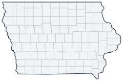

Historical county changes, 1790–1990 › Iowa

| Name↕ | Unit↕ | Existed↕ | FIPS↕ |
|---|---|---|---|
| Adair County | county | 1860–1990 | 19001 |
| Adams County | county | 1860–1990 | 19003 |
| Allamakee County | county | 1850–1990 | 19005 |
| Appanoose County | county | 1850–1990 | 19007 |
| Audubon County | county | 1860–1990 | 19009 |
| Benton County | county | 1850–1990 | 19011 |
| Black Hawk County | county | 1850–1990 | 19013 |
| Boone County | county | 1850–1990 | 19015 |
| Bremer County | county | 1860–1990 | 19017 |
| Buchanan County | county | 1850–1990 | 19019 |
| Buena Vista County | county | 1860–1990 | 19021 |
| Butler County | county | 1860–1990 | 19023 |
| Calhoun County | county | 1860–1990 | 19025 |
| Carroll County | county | 1860–1990 | 19027 |
| Cass County | county | 1860–1990 | 19029 |
| Cedar County | county | 1840–1990 | 19031 |
| Cerro Gordo County | county | 1860–1990 | 19033 |
| Cherokee County | county | 1860–1990 | 19035 |
| Chickasaw County | county | 1860–1990 | 19037 |
| Clarke County | county | 1850–1990 | 19039 |
| Clay County | county | 1860–1990 | 19041 |
| Clayton County | county | 1840–1990 | 19043 |
| Clinton County | county | 1840–1990 | 19045 |
| Crawford County | county | 1860–1990 | 19047 |
| Dallas County | county | 1850–1990 | 19049 |
| Davis County | county | 1850–1990 | 19051 |
| Decatur County | county | 1850–1990 | 19053 |
| Delaware County | county | 1840–1990 | 19055 |
| Des Moines County | county | 1840–1990 | 19057 |
| Dickinson County | county | 1860–1990 | 19059 |
| Dubuque County | county | 1840–1990 | 19061 |
| Emmet County | county | 1860–1990 | 19063 |
| Fayette County | county | 1850–1990 | 19065 |
| Floyd County | county | 1860–1990 | 19067 |
| Franklin County | county | 1860–1990 | 19069 |
| Fremont County | county | 1850–1990 | 19071 |
| Greene County | county | 1860–1990 | 19073 |
| Grundy County | county | 1860–1990 | 19075 |
| Guthrie County | county | 1860–1990 | 19077 |
| Hamilton County | county | 1860–1990 | 19079 |
| Hancock County | county | 1860–1990 | 19081 |
| Hardin County | county | 1860–1990 | 19083 |
| Harrison County | county | 1860–1990 | 19085 |
| Henry County | county | 1840–1990 | 19087 |
| Howard County | county | 1860–1990 | 19089 |
| Humboldt County | county | 1860–1990 | 19091 |
| Ida County | county | 1860–1990 | 19093 |
| Iowa County | county | 1850–1990 | 19095 |
| Jackson County | county | 1840–1990 | 19097 |
| Jasper County | county | 1850–1990 | 19099 |
| Jefferson County | county | 1840–1990 | 19101 |
| Johnson County | county | 1840–1990 | 19103 |
| Jones County | county | 1840–1990 | 19105 |
| Keokuk County | county | 1850–1990 | 19107 |
| Kossuth County | county | 1860–1990 | 19109 |
| Lee County | county | 1840–1990 | 19111 |
| Linn County | county | 1840–1990 | 19113 |
| Louisa County | county | 1840–1990 | 19115 |
| Lucas County | county | 1850–1990 | 19117 |
| Lyon County | county | 1870–1990 | 19119 |
| Madison County | county | 1850–1990 | 19121 |
| Mahaska County | county | 1850–1990 | 19123 |
| Marion County | county | 1850–1990 | 19125 |
| Marshall County | county | 1850–1990 | 19127 |
| Mills County | county | 1860–1990 | 19129 |
| Mitchell County | county | 1860–1990 | 19131 |
| Monona County | county | 1860–1990 | 19133 |
| Monroe County | county | 1850–1990 | 19135 |
| Montgomery County | county | 1860–1990 | 19137 |
| Muscatine County | county | 1840–1990 | 19139 |
| O'Brien County | county | 1860–1990 | 19141 |
| Osceola County | county | 1880–1990 | 19143 |
| Page County | county | 1850–1990 | 19145 |
| Palo Alto County | county | 1860–1990 | 19147 |
| Plymouth County | county | 1860–1990 | 19149 |
| Pocahontas County | county | 1860–1990 | 19151 |
| Polk County | county | 1850–1990 | 19153 |
| Pottawattamie County | county | 1850–1990 | 19155 |
| Poweshiek County | county | 1850–1990 | 19157 |
| Ringgold County | county | 1860–1990 | 19159 |
| Sac County | county | 1860–1990 | 19161 |
| Scott County | county | 1840–1990 | 19163 |
| Shelby County | county | 1860–1990 | 19165 |
| Sioux County | county | 1860–1990 | 19167 |
| Story County | county | 1860–1990 | 19169 |
| Tama County | county | 1850–1990 | 19171 |
| Taylor County | county | 1850–1990 | 19173 |
| Union County | county | 1860–1990 | 19175 |
| Van Buren County | county | 1840–1990 | 19177 |
| Wapello County | county | 1850–1990 | 19179 |
| Warren County | county | 1850–1990 | 19181 |
| Washington County | county | 1840–1990 | 19183 |
| Wayne County | county | 1850–1990 | 19185 |
| Webster County | county | 1860–1990 | 19187 |
| Winnebago County | county | 1860–1990 | 19189 |
| Winneshiek County | county | 1850–1990 | 19191 |
| Woodbury County | county | 1860–1990 | 19193 |
| Worth County | county | 1860–1990 | 19195 |
| Wright County | county | 1860–1990 | 19197 |
Note: Decimals in FIPS codes come from Forstall, who gives every county a code, including counties that no longer exist. A county abolished between 1930 and 1990 keeps the code it had. However, a county which was abolished prior to 1930 never received a code. Such a county is given the code of the county which precedes it alphabetically plus a decimal to hold its place in the list.
Source: Richard L. Forstall (1996), Population of States and Counties of the United States: 1790 to 1990, U.S. Bureau of the Census (public domain). Always check a row against the scan it links to.